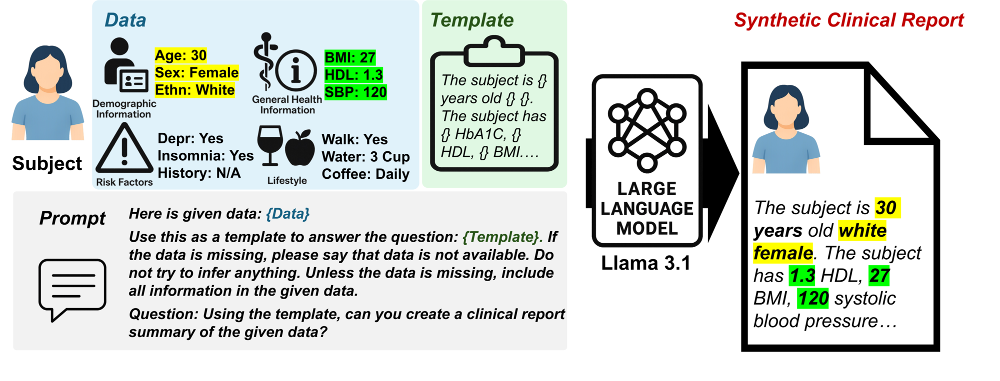
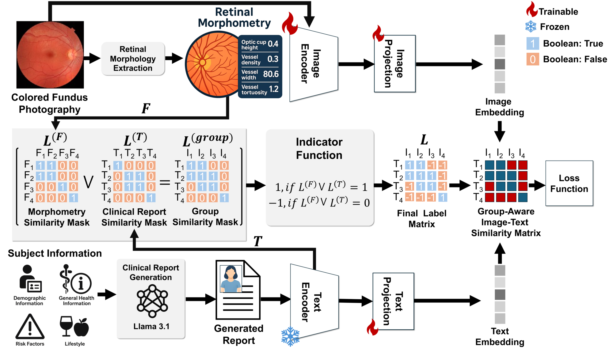

The retina provides a unique, noninvasive window into Alzheimer's disease and dementia, capturing early structural changes through morphometric features, while systemic and lifestyle risk factors reflect well-established contributors to AD and dementia susceptibility long before clinical symptom onset. However, current retinal analysis frameworks typically model imaging and risk factors separately, preventing them from capturing the joint multimodal patterns that are critical for early risk prediction. Moreover, existing methods rarely incorporate mechanisms to organize or align patients with similar retinal and clinical characteristics, limiting their ability to learn coherent cross-modal associations.
Because real-world risk factors are structured questionnaire data, we first translate them into clinically interpretable narratives compatible with pretrained vision–language models (VLMs). We further propose a group-aware contrastive learning (GACL) strategy that clusters patients with similar retinal morphometry and risk factors as positive pairs, strengthening multimodal alignment.
This unified representation-learning framework substantially outperforms state-of-the-art retinal imaging models paired with clinical text encoders, as well as general VLMs, demonstrating the value of jointly modeling retinal biomarkers and clinical risk factors. By providing a generalizable, noninvasive approach for early AD and dementia risk stratification, REVEAL has the potential to enable earlier interventions and improve preventive care at the population level.
REVEAL operates in two stages. First, it aligns fundus images with individualized AD and dementia risk factors using a CLIP-style contrastive learning approach with a novel image–text pairing strategy. Second, the learned joint representations are utilized in a downstream classifier to predict incident, preclinical AD and dementia.
Direct application of CLIP is not feasible because the risk factors come as structured questionnaire data rather than natural language. Using LLaMA-3.1, we convert each participant's risk factor profile into a synthetic clinical report—a clinically interpretable narrative following the CARE clinical case report guideline. This transformation enables the VLM to interpret tabular risk factors in a linguistically contextualized form.

Figure 2. Schematic overview of synthetic clinical report generation from structured risk-factor data.
Conventional CLIP-style frameworks often fail in the medical domain because they only accommodate a single positive pair per sample. Our GACL strategy computes intra-modality similarity matrices for both retinal morphometric features and clinical report embeddings, then applies thresholding and a logical OR operation to identify groups of clinically aligned patients. This enables multiple positive pairs per sample, strengthening multimodal alignment by reinforcing agreement between subjects who share both structural and semantic similarity.

Figure 3. Schematic overview of the GACL strategy. Trainable components are denoted by the flame icon.
We evaluated REVEAL on UK Biobank data (39,242 participants) for predicting incident AD and dementia. All color fundus photographs were collected from cognitively normal participants at baseline, with diagnoses occurring on average 8 years later.
| Model | AUROC | Balanced Acc. | F1-Score | MCC |
|---|---|---|---|---|
| Baseline SVM | 0.5487 | 0.5437 | 0.1290 | 0.0481 |
| KeepFIT-CFP | 0.5274 | 0.5105 | 0.1148 | 0.0114 |
| BiomedCLIP | 0.5333 | 0.4981 | 0.0965 | -0.0114 |
| RETCLIP | 0.5519 | 0.5345 | 0.1303 | 0.0483 |
| PMC-CLIP | 0.5463 | 0.5268 | 0.1360 | 0.0427 |
| RETFound+GatorTron | 0.6104 | 0.5529 | 0.1628 | 0.0809 |
| Ours (no GACL) | 0.6126 | 0.5836 | 0.2011 | 0.1169 |
| Ours (with GACL) | 0.6439 | 0.6029 | 0.2270 | 0.1562 |
| Model | AUROC | Balanced Acc. | F1-Score | MCC |
|---|---|---|---|---|
| Baseline SVM | 0.5714 | 0.5431 | 0.1349 | 0.0595 |
| KeepFIT-CFP | 0.4903 | 0.4879 | 0.1113 | -0.0157 |
| BiomedCLIP | 0.5430 | 0.5101 | 0.1091 | 0.0072 |
| RETCLIP | 0.6029 | 0.5397 | 0.1500 | 0.0751 |
| PMC-CLIP | 0.4605 | 0.5550 | 0.1725 | 0.0971 |
| RETFound+GatorTron | 0.6596 | 0.6121 | 0.2239 | 0.1532 |
| Ours (no GACL) | 0.5886 | 0.5768 | 0.1912 | 0.1003 |
| Ours (with GACL) | 0.6782 | 0.6294 | 0.2599 | 0.1915 |
| Task / Feature | AUROC | Balanced Acc. | F1-Score | MCC |
|---|---|---|---|---|
| Alzheimer's Disease | ||||
| Latent Feature | 0.6110 | 0.5699 | 0.1920 | 0.1015 |
| Morphometric Feature | 0.6439 | 0.6029 | 0.2270 | 0.1562 |
| Dementia | ||||
| Latent Feature | 0.6550 | 0.6149 | 0.2286 | 0.1568 |
| Morphometric Feature | 0.6782 | 0.6294 | 0.2599 | 0.1915 |
REVEAL with GACL achieves the best performance across all metrics for both AD and dementia prediction, outperforming strong baselines including RETFound+GatorTron, RETCLIP, BiomedCLIP, and PMC-CLIP. Notably, incorporating clinically grounded morphometric features for image–image similarity consistently yields superior performance compared to latent features, indicating that domain-specific structural measurements provide a more reliable signal for aligning subjects with similar retinal phenotypes.
This work builds on data and methods from several important resources.
The study uses retinal imaging and health data from the UK Biobank, a large-scale biomedical database. Retinal morphometric features are extracted using the AutoMorph pipeline.
The vision–language alignment builds on the CLIP framework, and synthetic clinical reports are generated using LLaMA 3.1.
We compare against several fundus-based foundation models including RETFound, RET-CLIP, KeepFIT, BiomedCLIP, and PMC-CLIP, as well as the clinical language model GatorTron.
@inproceedings{leem2026reveal,
title={REVEAL: Multimodal Vision--Language Alignment of Retinal Morphometry and Clinical Risks for Incident AD and Dementia Prediction},
author={Leem, Seowung and Gu, Lin and You, Chenyu and Gong, Kuang and Fang, Ruogu},
booktitle={Medical Imaging with Deep Learning},
year={2026}
}